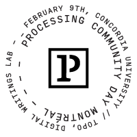
February 9, 2019
This event is part of a large network of similar events that will happen around the world (in Bangalore, Los Angeles, Mexico, São Paulo, Stockholm, Tokyo, etc.), brought together by the
- 20h ~ 22h TOPO, Laboratory for Digital Writings.
The day at Concordia will feature various presentations by artists, researchers, designers, and teachers. And during the evening, starting at 8PM, we will have a night of live coding performances at TOPO lab, in the Mile End. Suggested donations of $5 (or more) for visitors. All the money will be used to pay the presenters and the performers.
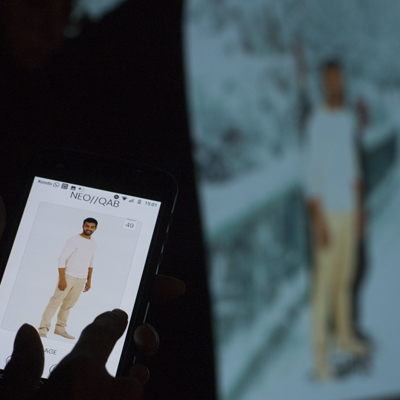
NEO//QAB - Rilla Khaled
NEO//QAB
_ _ _ _ _ _ _ _ _ _ _ _ _ _ _ _ _ _ _ _ _ _ _ _ _ _ _ _ _ _ _ _ _ _
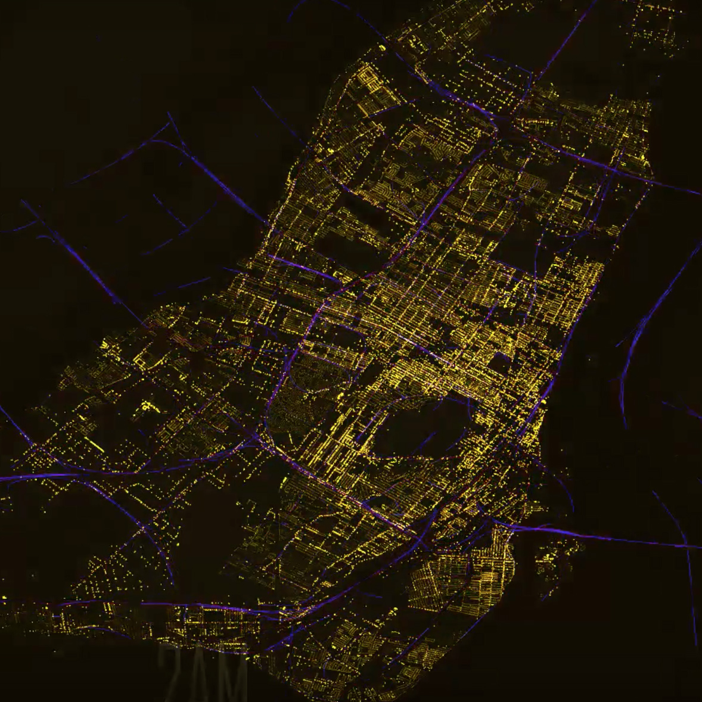
Processing for visualizing data: from the lab to the studio, by Tyler Sloan
_ _ _ _ _ _ _ _ _ _ _ _ _ _ _ _ _ _ _ _ _ _ _ _ _ _ _ _ _ _ _ _ _ _
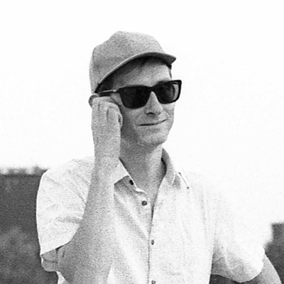
Doodle Jams : Pens and Pixels - MaxD
Pens and Pixels
Freeliner is a Processing based project that started in 2013 on the simple concept of defining lines and animating them. Over the last 5 years the project grew into a reliable and feature-full piece of software. But it also disproportionately outgrew the concept of a Processing sketch, which lead to starting the project over with the Rust programing language.
_ _ _ _ _ _ _ _ _ _ _ _ _ _ _ _ _ _ _ _ _ _ _ _ _ _ _ _ _ _ _ _ _ _
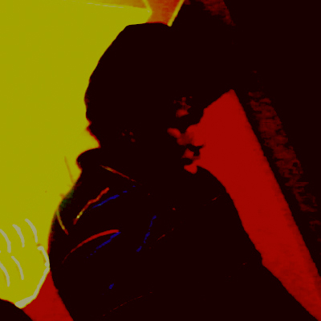
Creative Coding: Beyond The Loops - Kofi Oduro
This
_ _ _ _ _ _ _ _ _ _ _ _ _ _ _ _ _ _ _ _ _ _ _ _ _ _ _ _ _ _ _ _ _ _
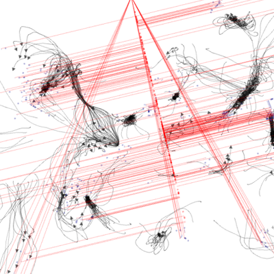
Escape Routes (2015) - Nima Navab
_ _ _ _ _ _ _ _ _ _ _ _ _ _ _ _ _ _ _ _ _ _ _ _ _ _ _ _ _ _ _ _ _ _
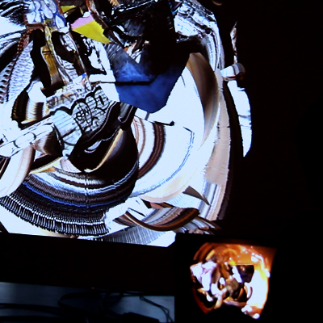
yi' (callejón de luz) - Rodrigo Velasco + Patrick Gauvin
yi’
_ _ _ _ _ _ _ _ _ _ _ _ _ _ _ _ _ _ _ _ _ _ _ _ _ _ _ _ _ _ _ _ _ _
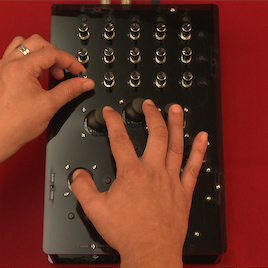
Prynth - Programmable sound synthesizers by Ivan Franco
_ _ _ _ _ _ _ _ _ _ _ _ _ _ _ _ _ _ _ _ _ _ _ _ _ _ _ _ _ _ _ _ _ _
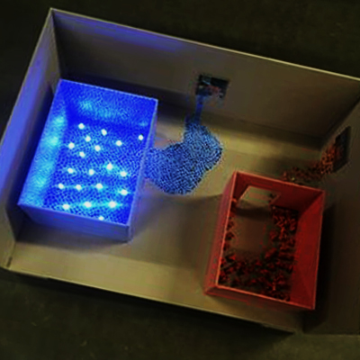
Wineglass - Katrina Jurjans
_ _ _ _ _ _ _ _ _ _ _ _ _ _ _ _ _ _ _ _ _ _ _ _ _ _ _ _ _ _ _ _ _ _
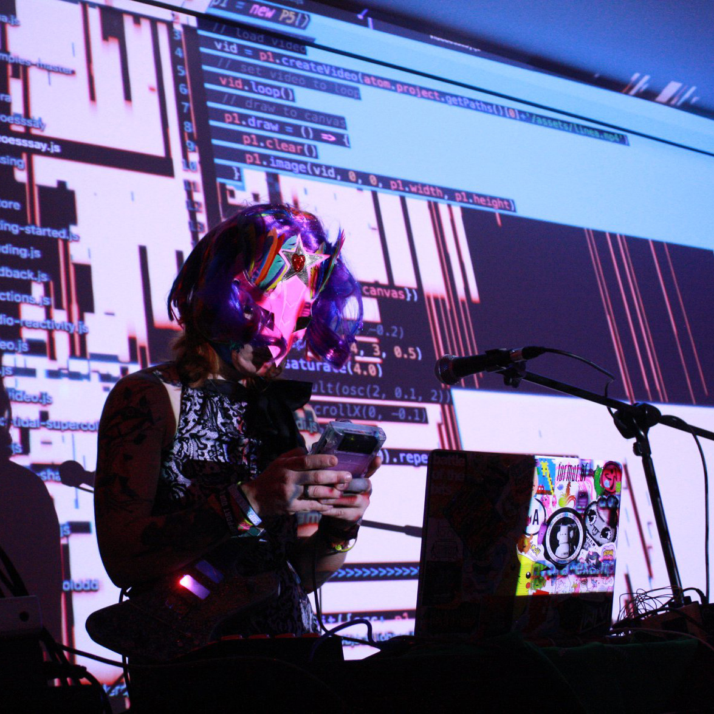
Programming in LSDJ, with Dominique Pelletier
_ _ _ _ _ _ _ _ _ _ _ _ _ _ _ _ _ _ _ _ _ _ _ _ _ _ _ _ _ _ _ _ _ _
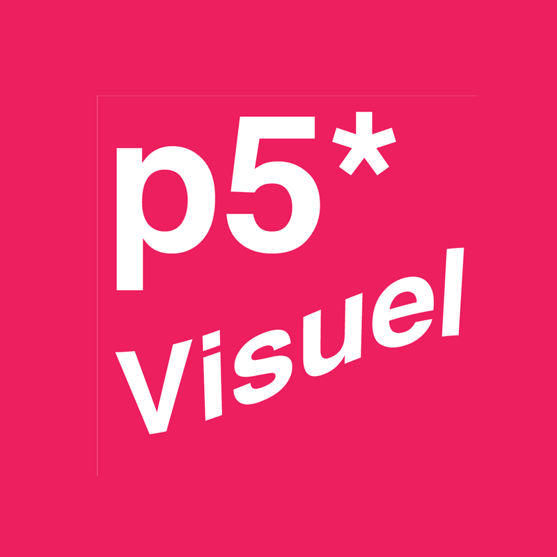
p5Visuel, par André Boileau
_ _ _ _ _ _ _ _ _ _ _ _ _ _ _ _ _ _ _ _ _ _ _ _ _ _ _ _ _ _ _ _ _ _
Graphic design meets creative coding, with Arthur Cloche
_ _ _ _ _ _ _ _ _ _ _ _ _ _ _ _ _ _ _ _ _ _ _ _ _ _ _ _ _ _ _ _ _ _
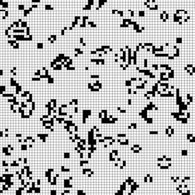
la voix totale - Minh Duc Nguyen
_ _ _ _ _ _ _ _ _ _ _ _ _ _ _ _ _ _ _ _ _ _ _ _ _ _ _ _ _ _ _ _ _ _
_ _ _ _ _ _ _ _ _ _ _ _ _ _ _ _ _ _ _ _ _ _ _ _ _ _ _ _ _ _ _ _ _ _
_ _ _ _ _ _ _ _ _ _ _ _ _ _ _ _ _ _ _ _ _ _ _ _ _ _ _ _ _ _ _ _ _ _
Rodrigo Velasco + Guillaume Pelletier-Auger
____ yectocsalev@gmail.com; pelletierauger@gmail.com